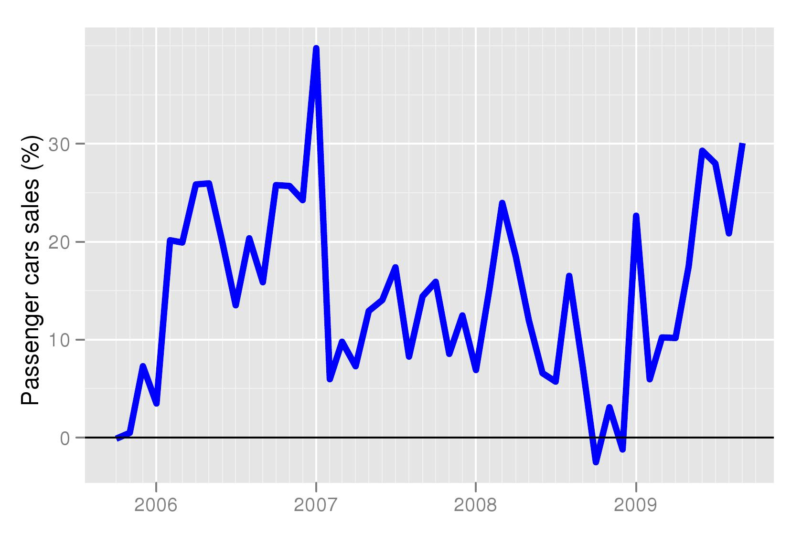
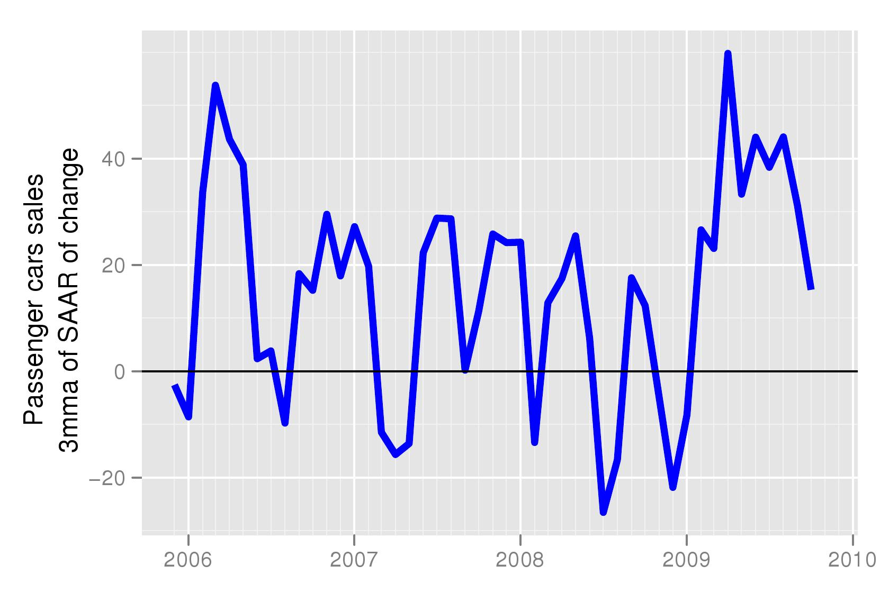
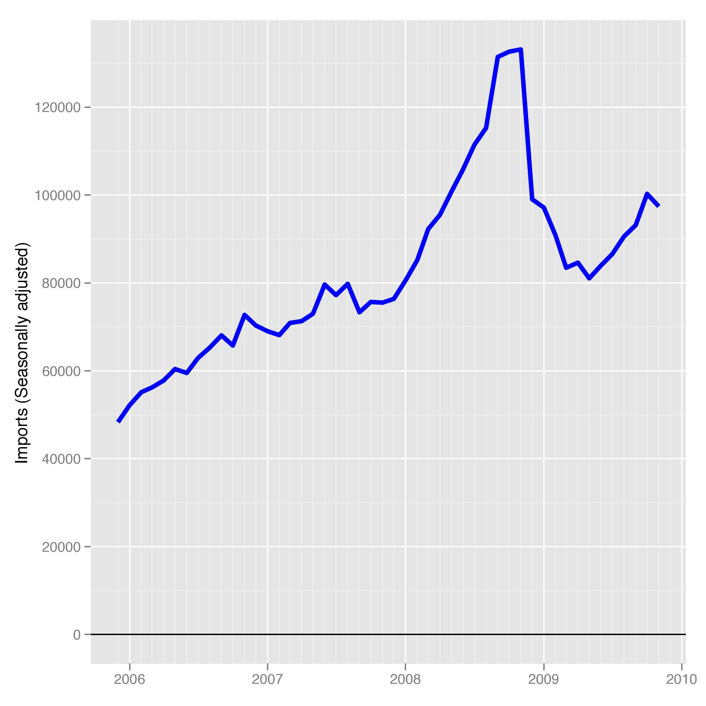

Shifting gears
Financial Express, 7 December 2009
A few days ago the media and markets were very excited about growth in sales of automobiles. The year on year growth of passenger cars rose to nearly 30 percent in november. In other words, compared to November last year, 2008, which had witnessed a very sharp decline in passenger car sales, there is healthy growth. As seen in Figure 1 (car_sales_yoy), when looking at the year on year numbers, it appears as if growth in passenger car sales have been steadily increasing.
But is this the correct picture to look at? As we have pointed out in these columns in the past, how we analyse the data determines what we see in it. Last year there was a shock to the financial system which hurt non-bank finance companies that had a large share of the car loan market. At the same time the global shock created uncertainty in the markets and consumer sentiment suffered. Not only have financial markets stabilised compared to that time, but the economy is doing well and jobs are more secure. In this environment particularly, it does not make a lot of sense to look at year on year growth in the market.
To examine recent trends in car sales we need to look at month on month growth in sales. However, like many other economic series, all of these have seasonality. We, therefore, adjust the monthly data for seasonality before analysing the annualised month-on-month growth rate. However, one observation does not make a trend. The figures, therefore, report the three months growth rate of seasonally adjusted sales. This data, and a number of other macroeconomic variables, seasonally adjusted and their behaviour can be seen on at this website where they are updated every Monday. Seasonally adjusted data and growth rates for important macroeconomic variables are being calculated under the aegis of the NIPFP-DEA program at the National Institute of Public Finance and Policy and data is available for free downloading.
Figure 2 (car_sales_saar) shows the behaviour of the month on month seasonally adjusted passenger car sales in India. The graph shows that while there was a very sharp recovery in the first three months of 2009, that growth has slowed decelerated since April. It has fallen from a peak of 60 percent to 17 percent now. While this is also healthy growth, by watching the year on year growth we get to know about trends in behviour very late. The impact of the decceleartion we observe today in the month on month growth will show up with a lag in the year on year growth. The month on month (SA) data is able to give us an early warning.
 Another indicator of demand in the economy, non-oil imports, shows a similar pattern. Figure 3(non_pol_imp_saar) shows that there was a sharp increase in growth in month on month seasonally adjusted non-oil imports early this year. For the past 3 months however, the growth rate has deccelearted. For sustained increase in demand after the large shock to demand in the last quarter of 2008, we would have to see a few quarters of high growth in non-oil imports for demand to return to old trend levels. Figure 4 shows seasonally adjusted imports. Imports have even in level terms not reached pre-crisis levels.
Another indicator of demand in the economy, non-oil imports, shows a similar pattern. Figure 3(non_pol_imp_saar) shows that there was a sharp increase in growth in month on month seasonally adjusted non-oil imports early this year. For the past 3 months however, the growth rate has deccelearted. For sustained increase in demand after the large shock to demand in the last quarter of 2008, we would have to see a few quarters of high growth in non-oil imports for demand to return to old trend levels. Figure 4 shows seasonally adjusted imports. Imports have even in level terms not reached pre-crisis levels.
In summary, while the behavior of passenger car sales, an indicator of demand, still remains healthy, the euphoria that met the release of the year on year figures was misplaced. We also see that non-oil imports, another indicator of demand has deccelerated a in the last 3 months. While neither indicator suggests that there is is reason for worry, they do suggest that we must continue to monitor the trends in demand. In these columns we will continue to track month on month growth (seasonally adjusted data) to catch the latest trends in the Indian economy, much ahead of those who are following the 12 month moving average. i.e the year on year growth data.
Back up to Ila Patnaik's media page
Back up to Ila Patnaik's home page